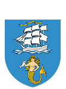

Zarządzanie procesami logistycznymi
wobec współczesnych wyzwań
Zarządzanie ryzykiem zawodowym w logistyce – droga do »zero wypadków« w magazynie i transporcie
Tematem Słupskich Dni Techniki, Transportu i Logistyki będzie „Zarządzanie procesami logistycznymi wobec współczesnych wyzwań”.
Równocześnie odbędzie się Forum Bezpieczeństwa i Zdrowia Pracujących, którego tematem będzie „Zarządzanie ryzykiem zawodowym w logistyce – droga do »zero wypadków« w magazynie i transporcie”.
5 listopada 2026
II Pomorskie Dni Logistyki
Forum Bezpieczeństwa i Zdrowia Pracujących
Aula Uniwersytecka
ul. Kozietulskiego 7, Słupsk
6 listopada 2026
Infrastruktura DUAL USE w praktyce - wizyta studyjna w Porcie Ustka
Zgłoszenia poprzez formularz online - w terminie do 15 września 2026 r.
Aula Uniwersytecka, ul. Kozietulskiego 7, Słupsk
„Zarządzanie ryzykiem zawodowym w logistyce – droga do »zero wypadków« w magazynie i transporcie”
Uroczyste wręczenie wyróżnień Kompas Logistyki 2026, koncert kameralny
Wizyta studyjna w Porcie Ustka


Rada Regionalna w Słupsku

Instytut Zarządzania
Oddział Okręgowy w Gdańsku
